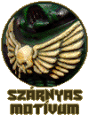

| |
Hogyan
fessünk ûrgárdistát
Most érkezett el az idõ, mikor úgy éreztem,
hogy áll már mögöttem annyi kifestett ûrgárdista,
hogy nyugodt szívvel vessem “papírra”
tapasztalataimat. Elöljáróban annyit jegyeznék
csak meg, és utána nem is húzom tovább az idõt,
hanem rögtön bele is vágok, hogy a saját figuráimból
kiindulva alább leginkább Dark Angels
marine-okra írtam ezt az útmutatót, de nem kell
hozzá túl nagy fantázia, hogy bárki átültethesse
az itt leírtakat a saját rendháznak színeire.
Elõkészületek
Mint minden figura kifestése, ez is a sorjázással
kezdõdik, amikor is egy késsel (fém figurák
esetében reszelõvel), finoman kapargatva eltávolítjuk
a figuráról az öntés során keletkezett hibákat.
Ha akarjuk a figurát csapolni, akkor azt szintén
ilyenkor tehetjük meg. Amennyiben a csapolás
mellett döntöttünk, és a
marine teste üreges, akkor ragasztás elõtt még
fel kell töltenünk
valamilyen kötõanyaggal (putty-val például), különben
nem fognak benne megállni a csapok. De mûanyag
figurák esetén nyugodtan eltekinthetünk a
csapolástól, mert a mûanyagragasztók kellõ
szilárdsággal fogják majd egymásba forrasztani
az összeillõ részeket.
Szintén ilyenkor kell eldöntenünk azt,
hogy a figurát darabokban, vagy egyben festjük-e
ki. Én nem titkoltan a darabokban festés híve
vagyok, mert így nem lesznek a figurán takarásban
lévõ felületek, amiket csak nehezen vagy egyáltalán
nem tudok majd kifesteni. Ez természetesen nem
azt jelenti, hogy teljesen darabjaiban festem ki a
figurát! Csak azokat a részeket ragasztom fel utólag,
amik takarnak bizonyos területeket, vagy megnehezítik
a festést. Általában a kezeket, a vállpajzsokat
és a hátizsákot szoktam külön festeni, minden
mást összeragasztok festés elõtt. Egyiknél
sem kell azonban aggódni, hogy az utólagos
ragasztással esetleg elcsúfíthatjuk a figurát,
hiszen minden esetben takarásban lesz a ragasztási
felület, elõbbi esetében a vállpajzsok, utóbbiban
pedig maga a hátizsák által.
Az alapozás elõtt már csak a figura talpának
elkészítése van hátra. Sima gárdisták esetében
ez viszonylag egyszerû, hiszen csak be kell vonni
a talpat ragasztóval, némi madárhomokot szórni
bele, és megvárni amíg megszárad. Karakterek
esetében viszont még lehet (sõt érdemes is) díszíteni:
koponyákkal, eldobált fegyverekkel, sziklákkal
vagy esetleg statikus mûfûvel. Ha mindez megvan,
akkor jöhet az alapozás, ízlés és a figura
színének megfelelõen fekete vagy fehér alapozó
spray-vel.
A festés
Ezek után nézzük mik is azok a konkrét
technikák, amik a figura szép kifestéséhez
kellenek. Nem írok lépésrõl-lépésre felépített
útmutatót, helyette inkább a különbözõ részek
kifestésének technikájával foglalkoznék behatóbban,
így mindenki olyan sorrendben haladhat, ahogyan
neki kényelmes. Kezdjük is akkor mindjárt az
egyik legfontosabbal a páncéllal.
Páncél: Kétségkívül ez a
figura egyik legfontosabb része! Mivel a felület
legnagyobb százalékát ez foglalja el, így aztán
elengedhetetlen, hogy ne kellõ odafigyeléssel készítsük
el. Miután a mélyen fekvõ részeket kitöltöttük
feketével, a festéshez az alapszín egy erõsen
hígított változatát használjuk. Erre azért
van szükség, hogy az ecset ne hagyhasson
nyomokat a felületen, ami eléggé illúzióromboló
lehet egy gárdista páncélján. A hígított
festéknek természetesen arányosan romlik a fedõképessége,
ezért elõfordulhat, hogy akár háromszor vagy négyszer
is át kell mennünk rajta, mire egységes lesz a
felület, de a tükörsima páncél látványa bõven
kárpótolni fog minket a belefektetett munkáért.
A festés alatt viszont nagyon vigyáznunk kell,
mert a híg festék hajlamos elfolyni. Némi
gyakorlatot igényel, de hamar bele lehet tanulni.
|
A highlight-olást az alapszín kicsit
kivilágosított változatával végezzük, szintén
erõsen hígítva. Ebben az esetben a hígítás
azért szükséges, hogy visszafogjuk a szín fedõképességét,
és ezáltal az élek és egyéb magasabban fekvõ
területek kihúzásakor ne képzõdhessen határvonal.
(Ezt a módszert egyébként szinte a figura egész
felületén alkalmazhatjuk. Késõbb, ha szintén
hígított festéket említek, akkor szinte
biztos, hogy emiatt ajánlom a használatát.)
Ha a hígítás miatt elsõre nem látszik a világosabb
réteg, akkor nyugodtan festhetünk |
|
|
|
több rétegben
is, egyre vékonyodó vonalakkal (ezzel egyébként
nagyon szép átmeneteket lehet képezni). Ha
pedig nem sikerült szépre az átmenet, és mégis
meglátszik a határvonal a színek találkozásánál,
akkor visszanyúlunk az eredeti alapszín hígított
változatához, és átkenjük vele a világos réteg
határát, megpróbálva ezáltal egybemosni a két
színt. A technika másik elõnye (a szép átmenetek
képzésén túl), hogy a hígított festéket több
rétegben is nyugodtan egymásra festhetjük, mert
nem fog vastag festékmáz képzõdni a figuránkon,
hanem szép egyenletes marad. |
megj.: Egyes játékosok egy nagyon vékony világos
vonallal ki szokták húzni a páncél éleit. Én
is próbálgattam, de az én Sötét Angyalaimnál
nem igazán jött be ez a technika. Mindazonáltal
láttam már nagyon szép modelleket hasonlóan
elkészítve, úgyhogy aki érez magában egy kis
bátorságot az nyugodtan kísérletezzen vele.
|  |
A mellvért emblémája: A páncél
után a legszembetûnõbb momentum egy ûrgárdistán,
a mellvért elején látható szárnyas motívum
(feltéve, ha a fegyver nem takarja :). Viszonylag
egyszerû szépen kifesteni, és szerencsére
rendkívül mutatós is tud lenni. Ehhez elõször
is fessük
az egészet feketére, majd egy nagyon vékony
ecsettel szépen, határozott mozdulatokkal egyenként
húzgáljuk ki a szálakat blenched bone-al. Ha ez
megvan, akkor veszünk egy kevés snakebite
leather-t és körülbelül 1-10 arányban hígítjuk
vízzel, majd ezzel a |
|
|
nagyon híg, szinte tintaszerû festékkel átmossuk az egészet
egyszer vagy kétszer. A lényeg az, hogy kapjon a
felület egy nagyon enyhe barnás árnyalatot.
Ha ez megvan, akkor a szálak végeit újra kihúzzuk
egy picit hígított csontszínnel, és készen is
vagyunk. |
A sisak szemlencséi: Elég
kicsi terület, de általában eléggé elütõ színûek
ahhoz, hogy hangsúlyos szerephez jussanak a figurán.
Festésük megegyezik az ún. Drágakõ technikával,
ami abból áll, hogy a felület alsó felét
kivilágosítjuk, a felsõt besötétítjük, és
a sötét rész közepére teszünk egy apró fehér
pontot, azáltal üvegszerû hatást érve el. Ez
persze így leírva szépen hangzik, gyakorlatban
azonban nekem az utolsó lépésként taglalt fehér
pont felvitele már nem jött be, mert kancsal hatást
keltett tõle a figura. Így aztán én ezt az
utolsó lépést el is szoktam hagyni, és csak
egy kicsit sötétítem be a szemlencse felsõ részét.
|
Fegyverek: Ezen a ponton kicsit
gondban vagyok, ugyanis nem lehet egyértel- mûen
tanácsot adni a fegyverek kifestéséhez. És itt
fõleg a szín megválasztására gondolok. Az
alapvetõ elv az, hogy a figura alapszínéhez választjuk
hozzá a fegyver színét. Tehát egy sötétebb tónusú
figurához valami világosabbat, egy világosabbhoz
pedig sötétebb fegyvert festünk. Ennek az az
oka, hogy a figura nagy részét a páncél
foglalja el, ami monotonná teszi a modellt, a
fegyver pedig pontosan egy olyan részlet, ami
megtöri ezt a monotonitást. Ez fõleg azoknak |
|
|
|
fontos, akik játszanak is a figurájukkal, mert
így nem csak egy homogén színfoltot látnak
majd viszont a terepasztalon. Így aztán például
a Sötét Angyalok feketés-zöld színéhez remekül
illik a piros vagy bordó fegyver, míg egy Véres
Angyal osztaghoz már inkább a fekete dukál.
Természetesen szép számmal vannak olyanok is,
akik elvetik a színes fegyvereket. Nekik a fémesebb
színeket vagy a sima feketét tudom javasolni.
Itt még annyit tennék hozzá, hogy a fegyver csövét
lehetõleg fúrjuk ki, de legalább egy kicsiny
fekete pontot fessünk rá, ne elégedjünk meg
azzal, hogy lefestjük fémszínûre! |
Ruházat: Nem általános, de mégis
elõfordulhat, hogy találunk az ûrgárdistán
valamilyen ruhaélét: egy köpenyt vagy palástot
például. Ez fõleg a karaktereknél, és a Sötét
Angyaloknál gyakori. Én kétféle festési módot
különböztetek meg: a világos tónust és sötét,
bársony-szerût.
|
Elõbbinél maradva tegyük fel, hogy az
egyik veterán katonánk köpenyét szeretnénk
fehérre festeni. Ilyenkor a következõképpen járunk
el: Lefestjük az egész felületet, szépen,
egyenletesen blenched bone-al. Ezután veszünk
egy kevés snakebite leather-t és jól felhígítjuk
vízzel, hogy szinte alig maradjon benne pigment,
majd ezzel a híg festékkel megfestjük a mélyebb
részeket. Ha nem fed eléggé, akkor többször
is átmehetünk a felületen. Ha nem lett szép az
átmenet és látszik a határvonal a két szín közt, akkor érdemes
az egész felületet |
|
|
átmosni szintén végletekig hígított csontszínnel, akár többször is, amíg
el nem tûnnek a határvonalak. Ezt a lépést egyébként
mindenképpen ajánlatos elvégezni, mert nagyon jól
egymásba olvasztja a két színt. Ezután pedig már
nincs más dolgunk, mint egy enyhén hígított
skull white-al kihúzni a magasabban fekvõ gyûrõdések
éleit.
Egy eltérõ, ám legalább
annyira hatásos módszer, amikor elõször
az alapszín, egy sötétebb változatával
lefestjük az egész ruhát, majd egyre világosodó
rétegeket viszünk fel a felületre drybrush
technikával. Így a világos színek csak a
kiemelkedõ redõkre tapadnak majd rá.
Azonban egy átmosás néha ezek után is ajánlott,
hogy elsimítsa a határvonalakat a színek
találkozásánál.
|
|
|
A másik festési technika kizárólag
nagyon sötét anyagoknál mûködik és egyfajta
bársony-szerû hatást lehet elérni vele. Nagyon
egyszerû, és nagyon szép eredményt ad. Annyi a
lényege, hogy lefestjük a ruha egész felületét
feketére, és csak az éleket húzzuk ki a kívánt
szín enyhén hígított változatával. Ha nem
fed rendesen, akkor esetleg átmehetünk rajta többször
is, de itt voltaképpen az a lényeg, hogy csak
sejtsük a ruha eredeti színét, mintha a fény
villantaná fel egy pillanatra. A módszer hátulütõje,
hogy kizárólag sötétebb színekkel mûködik,
a világosabb árnyalatokat tehát elfelejthetjük!
|
|
|
Arc: Az általános útmutatóban már
volt szó az arcfestésrõl, de úgy gondolom,
hogy nem árthat, ha a saját tapasztalataim is leírom
ezen a területen. Elõször is szeretném leszögezni,
hogy én a karakteresebb, kicsit kontúros arcok híve
vagyok, mert szerintem ezek sokkal jobban illenek
egy ûrgárdistához.
|
|
Ehhez elõször is fessük meg a szemeket,
majd, amikor már a szembogár is a helyén van,
fessük körbe feketével, megadva ezzel a szem
alakját. Ha nem feketére alapoztunk, akkor most
fessük át az egész arcot vékonyan
feketével. Ezután meg
kell határozni, hogy milyen színûre is szeretnénk
majd festeni a figura arcát, és ki kell keverni
egy ennél némileg sötétebb árnyalatot. Ez
lesz az alapszín. Ezzel a festékkel egyenletesen
kenjük át az egész arcot, de vigyázzunk arra, hogy a mélyedésekben (például a ráncokban
vagy a szájban) |
|
|
megmaradjon
az eredeti fekete
alap, és a szem köré is hagyhatunk egy vékony
kontúrt. Ezután adunk egy kevés vizet az alapszínhez
és elõkészítjük a fehér festéket.
Ha mindezzel megvagyunk, akkor a fehér
segítségével fokozatosan világosítva az
alapszínt, elkezdjük
kifesteni a magasabban fekvõ részeket
(pofacsont, áll, homlok, stb.). Ahogyan haladunk
felfelé, egyre kisebb területet festünk csak be
az egyre világosodó rétegekkel, így ha jól
csináltunk mindent, akkor nem lesznek majd láthatóak
határvonalak a különbözõ árnyalatok találkozásánál.
Olyan három, maximum négy réteg az optimális,
annál több már felesleges. |
Ha valaki nem híve a túl kontúros megoldásoknak,
akkor fekete helyett használjon sötétbarnát a
ráncokban. Sõt, igény szerint akár világosabb
barna is kerülhet a mélyedésekbe, bár
szerintem az már túl lággyá teszi az arcot,
ami semmiképpen sem illik egy ûrgárdistához.
|
Matricázás: Utolsó lépésként
pedig egy olyan rész következik, amire az
emberek többsége nem sok figyelmet fordít,
pedig a matricák felrakása az egyik sarkalatos
pontja a figurának. Egy szépen felrakott matrica
sokat dobhat egy figura összhatásán, míg egy
csúnya akár el is ronthatja. Természetesen
vannak olyanok, akik nem hívei a matricáknak és
szeretik kézzel felfesteni a rend jelöléseit.
Ehhez biztos kéz kell és rengeteg idõ, de
nagyon szépen meg lehet csinálni. Ami miatt
viszont én mégsem javaslom az az, hogy közel |
|
|
|
lehetetlenség egy 10 fõs osztag minden tagjára
pontosan ugyanakkora és ugyanolyan emblémát
festeni. Márpe- dig sokat ronthat egy amúgy szépen
kifestett osztag összképén, ha a jelzéseik nem
tökéletesen egyformák. Éppen ezért én a
matricázást ajánlom, de ez természetesen nem
azt jelenti, hogy a legprofibbak ne festhetnék
meg mégis saját maguk az osztag jelöléseit.
Ehhez csak annyit tennék hozzá, hogy érdemes
megpróbálni elõtte egy nagyon puha grafitceruzával
elõrajzolni a kívánt mintát, esetleg sablont
használni hozzá. |
|
|
|
Matricázásnál a legfontosabb, hogy használjunk
matrica lágyító folyadékot, amelyet bármelyik
modellboltban beszerezhetünk. Voltaképpen az
alapjában kemény anyagú matricát lágyítja
meg annyira, hogy az a görbe felületekhez is
teljes mértékben hozzásimuljon, hézagok nélkül.
A segítségével nagyon szépen fel lehet vinni
szinte bárhová a matricákat, pusztán csak
annyi a dolgunk, hogy víz helyett ebbe áztatjuk
bele a hordozót. Ha a matrica megszáradt és már
biztosan ül a helyén, akkor még annyit tegyünk
meg, hogy az alapszínnek |
|
|
megfelelõ, enyhén hígított
festékkel egyszer vagy kétszer átkenjük a széleit,
ezáltal elrejtve az ott keletkezõ világosabb, fényes
sávot, ami minden matrica sajátja. Ezután már
csak abból lehet rájönni, hogy matricát használtunk,
hogy szép egyformák a jelzések minden gárdistán.
:) |
Zárszó
Azt hiszem ezzel ki végeztem az összes,
általam fontosnak tartott részletet. Szerintem,
ha valaki próbálgatja a fentebb leírtakat,
akkor nagyon rosszat már nem csinálhat. :) Természetesen
újabb ötleteket, kiegészítéseket,
javaslatokat és kérdéseket szívesen fogadok a
fórumba, vagy e-mailben. Jó festegetést!
Írta: Rince
(A mellékelt
képekhez kizárólag saját festéseimet használtam
fel.)
|
|